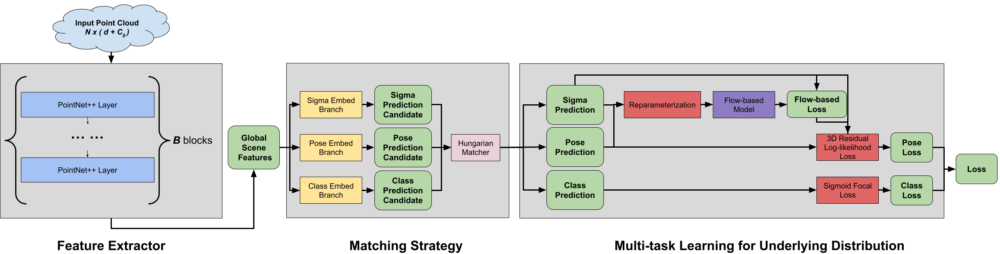

Abstract
Current point cloud-based 3D human pose estimation methods lag behind image-based approaches despite inherent advantages, including continuous output space (avoiding quantization errors), reduced computational complexity (eliminating voxel-based heatmap computations), and inherent extendability to other 3D vision tasks. However, existing point cloud models struggle with multi-person scenarios and fail to generalize to highly complex poses, limiting their practical adoption. To address these gaps, we propose a novel point cloud-based framework for robust multi-person 3D pose estimation. Our method integrates three key innovations: (1) a hierarchical feature extraction module inspired by the PointNet architecture, optimized for sparse and unordered point cloud data; (2) an efficient multi-person matching strategy that disentangles pose estimation across individuals in crowded scenes; and (3) a multi-task loss function designed to learn the latent distribution of human poses, significantly improving generalization to challenging articulations. Extensive experiments demonstrate that our approach achieves state-of-the-art accuracy on 2 very challenging MMA benchmark datasets, narrowing the performance gap with image-based methods by 30% while reducing computational overhead by 2.4×. The framework’s modular design further enables seamless adaptation to related 3D tasks such as object detection, positioning it as a versatile backbone for real-world applications. Implementation details and ablation studies validate the efficacy of each component, underscoring the potential of point clouds as a lightweight, scalable alternative to traditional RGB-based pose estimation pipelines.
Data
1. UMA Synthetic Dataset

Home-made point cloud dataset within Unity engine
2. UFC benchmark 24: Motion Captured with real UFC player

Real actions captured by motion capture suits
Method
The pipeline consists of three main components: PointNet feature extraction, Matching Strategy for Multi-person Scenarios, and Multi-task learning for underlying distribution. The PointNet feature extraction module is responsible for capturing the spatial relationships between points in the input point cloud. The Matching Strategy for Multi-person Scenarios disentangles pose estimation across individuals in crowded scenes. Finally, the Multi-task learning for underlying distribution module is designed to learn the latent distribution of human poses, significantly improving generalization to challenging articulations.